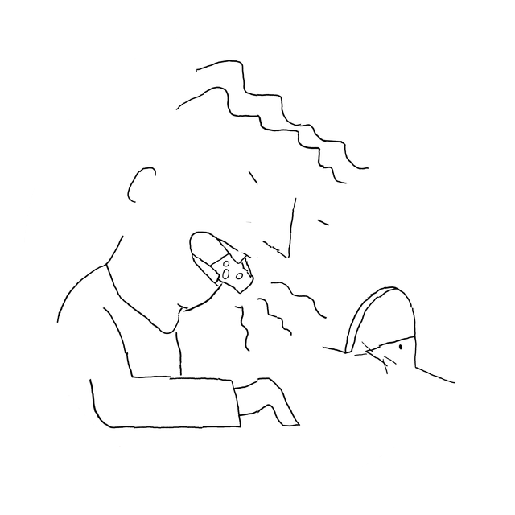

This puzzle centers around eggcorns, the phenomenon where a phrase with an unfamiliar word is mutated by unknowing speakers into a similar-sounding, and curiously also sensible, phrase. Each cartoon depicts the mutated version of an eggcorn, and the twenty letter transformations in the top circle represent the mutations that have occurred to generate them:
| Acorn (un-mutated) | Eggcorn (mutated) | Mutation |
|---|---|---|
| ROLL CALL | ROLE CALL | L → E |
| WITHOUT FURTHER ADO | WITHOUT FURTHER ADIEU | 1 → 3 |
| POST-TRAUMATIC STRESS DISORDER | POST-DRAMATIC STRESS DISORDER | 4 → 3 |
| STEAM TURBINE | STEAM TURBAN | 3 → 2 |
| JUST DESERTS | JUST DESSERTS | +S |
| TOE THE LINE | TOW THE LINE | E → W |
| BEAR WITNESS | BARE WITNESS | 3 → 3 |
| PUT THE CART BEFORE THE HORSE | PUT THE CAT BEFORE THE HORSE | −R |
| ANCHORS AWEIGH | ANCHORS AWAY | 4 → 2 |
| SPINAL CORD | SPINAL CHORD | +H |
| FOR ALL INTENTS AND PURPOSES | FOR ALL INTENSIVE PURPOSES | 5 → 4 |
| PLANE GEOMETRY | PLAIN GEOMETRY | 2 → 2 |
| FREE REIN | FREE REIGN | +G |
| PRAYING MANTIS | PREYING MANTIS | A → E |
| PAY PER VIEW | PAPER VIEW | −Y |
| SHOO-IN | SHOE-IN | O → E |
| SCAPEGOAT | ESCAPE GOAT | +E |
| BALD-FACED LIE | BOLD-FACED LIE | A → O |
| SOCIAL MORES | SOCIAL MORAYS | 1 → 2 |
| SNEAK PEEK | SNEAK PEAK | E → A |
For each wedge in the top circle, find the matching cartoon and take the corresponding numbered wedge. Reassembling them yields one final cartoon:

This depicts BAITED BREATH, which is an eggcorn for the answer, BATED BREATH.
{kind=link}